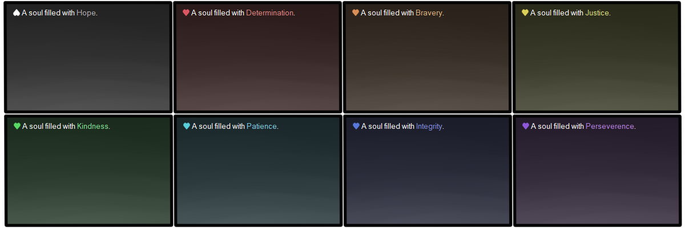
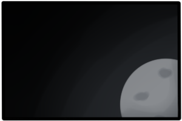

Balloons
Balloons are the speech bubbles that ghosts use! All of my ghosts come bundled with one that will install alongside them, but if you're interested in switching things up a little, or developing a ghost of your own and need a balloon for it, I've made a bunch of them you can use!
Do note that using a ghost with a balloon other than its default may cause weird visual issues if the text area is a different size than was planned for.
Undertale Balloon Pack

16 balloons are available, one in each color with either hearts or souls/upside down hearts!
Download the whole pack, or pick individual balloons.
Galaxy Balloon Pack

8 galaxy themed balloons bundled with a galaxy calendar skin! The readability isn't always the best, but they sure are pretty.
Download the whole pack, or pick individual balloons.
Transmission

Created for Iea, for ghost jam 2020. A simple balloon featuring a moon in the corner.
Download it here.
Tamriel

Created for Skyrim Guard. A semi transparent balloon styled after the choice menus in Skyrim.
Download it here.